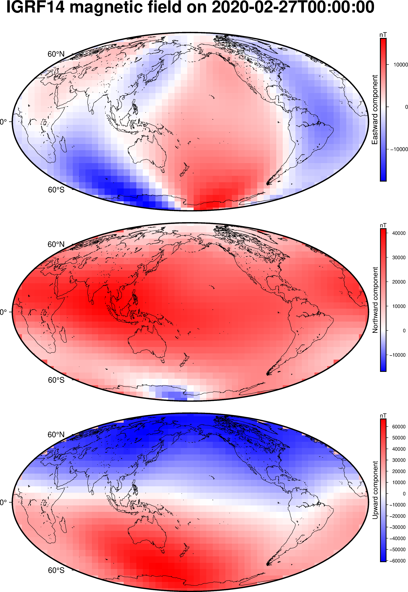
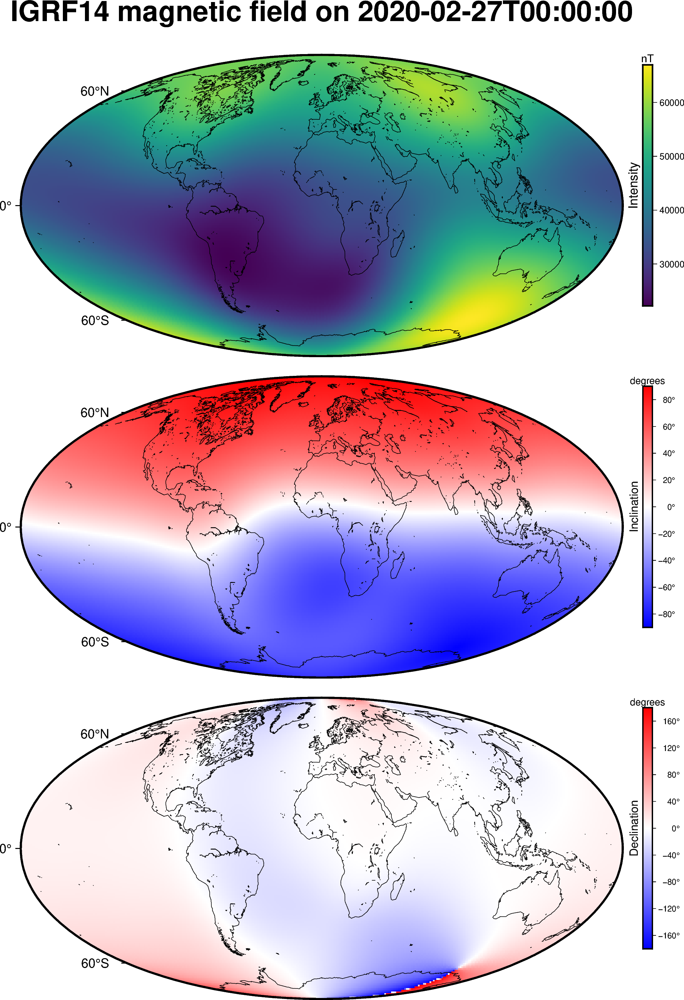

IGRF calculation#
The International Geomagnetic Reference Field (IGRF) is time-variable spherical
harmonic model of the Earth’s internal magnetic field [Alken2021] [IAGA2024].
The model is released every 5 years and allows us to calculate the internal
magnetic field from 1900 until 5 years after the latest release (based on
predictions of the secular variation). Harmonica allows calculating the 14th
generation IGRF field with harmonica.IGRF14. Here’s how it works.
import datetime
import numpy as np
import pygmt
import boule as bl
import harmonica as hm
All of the functionality is wrapped in the IGRF14 class.
When creating an instance of it, we need to provide the date on which we want
to calculate the field:
igrf = hm.IGRF14("1954-07-29")
The date can be provided as an ISO 8601 formatted date string like above or as a Python
datetime.datetime:
igrf = hm.IGRF14(datetime.datetime(1954, 7, 29, hour=1, minute=20))
Note
If the time is omited, the default is midnight. If a timezone is omited, the default is UTC.
Tip
Typically, for a short magnetometry survey (a few days to a week), using a single time for calculating the IGRF is adequate, since IGRF secular variations on these time scales are typically small. However, if the survey is longer, or high precision is required, it may be best to separate the survey by days or flights and calculate the IGRF using a more appropriate datetime for each section.
Calculating at given points#
To calculate the IGRF field at a particular point or set of points, we can use
the harmonica.IGRF14.predict method. For example, let’s calculate the
field on the date above at the Universidade de São Paulo campus. To do so, we need to provide the geodetic
coordinates longitude, latitude, and geometric height (in meters) of the
calculation point in that order:
field = igrf.predict((-46.73441817537987, -23.559276852800025, 700))
print(field)
(-5120.730455904012, 22239.393240125162, 8754.879929493665)
The return value field will always be a tuple with the eastward, northward,
and upward components of the magnetic field. The vector is in a geodetic
coordinate system with the horizontal (eastward and northward) directions
parallel to the surface of the ellipsoid and the upward direction parallel to
the ellipsoid normal at each given point.
We can print the results in a better way to view them:
print(f"Be={field[0]:.1f} nT | Bn={field[1]:.1f} nT | Bu={field[2]:.1f} nT")
Be=-5120.7 nT | Bn=22239.4 nT | Bu=8754.9 nT
We can convert this tuple of values into intensity (or amplitude), inclination and
declination using
harmonica.magnetic_vec_to_angles.
intensity, inc, dec = hm.magnetic_vec_to_angles(*field)
print(f"{intensity=:.1f} nT | {inc=:.1f}° | {dec=:.1f}°")
intensity=24443.0 nT | inc=-21.0° | dec=-13.0°
Note
While the vertical component of the magnetic field (\(B_u\)) is positive upward, the inclination is positive downward as per international convention. Hence why the value above is negative.
In addition to calculating the IGRF field at one location, multiple coordinates can be given as numpy arrays or lists:
field = igrf.predict((
[-46.73441817537987, -157.81633280370718],
[-23.559276852800025, 21.297542396621708],
[700, 80],
))
print(field)
(array([-5120.7304559 , 5569.26432127]), array([22239.39324013, 27863.10882347]), array([ 8754.87992949, -22952.79770157]))
The resulting components will be numpy arrays with a shape that matches the shape of the coordinates.
Changing the reference ellipsoid#
The actual calculations (see the notes in harmonica.IGRF14) are
performed in geocentric spherical coordinates. This means that the input
coordinates must be converted from a geodetic system (which is what most data
will come in) to a geocentric system and the output vector must be rotated back
to the geodetic system. We use the ellipsoids in boule to
handle these conversions. By default, we use the WGS84 ellipsoid but you can
pass other Boule ellipsoids (or make your own with boule.Ellipsoid):
igrf_grs80 = hm.IGRF14("1954-07-29", ellipsoid=bl.GRS80)
field = igrf_grs80.predict((-46.73441817537987, -23.559276852800025, 700))
print(field)
(-5120.723844237039, 22239.4027452013, 8754.87004402814)
Notice that the field values are slightly different. So it can be important that the ellipsoid passed to the class is the one used for your coordinates.
Generating a grid#
If we want to make a grid of the IGRF values, we could create grid coordinates
and pass them to the predict method. However, there
are certain repeated operations that can be avoided when we know we’re
calculating on a grid. Plus, it would be good to have the results in
a xarray.Dataset that carried all of the associated metadata.
That’s what the harmonica.IGRF14.grid method is for! Calculations with
it will be at least 2x faster than using predict and
it packages the results in a xarray.Dataset full of metadata:
igrf = hm.IGRF14("2020-02-27")
grid = igrf.grid(region=(0, 360, -90, 90), height=0)
grid
<xarray.Dataset> Size: 54kB
Dimensions: (latitude: 29, longitude: 57)
Coordinates:
* latitude (latitude) float64 232B -90.0 -83.57 -77.14 ... 77.14 83.57 90.0
* longitude (longitude) float64 456B 0.0 6.429 12.86 ... 347.1 353.6 360.0
height (latitude, longitude) float64 13kB 0.0 0.0 0.0 ... 0.0 0.0 0.0
Data variables:
b_east (latitude, longitude) float64 13kB 0.0 0.0 0.0 ... 0.0 0.0 0.0
b_north (latitude, longitude) float64 13kB 1.443e+04 ... 1.814e+03
b_up (latitude, longitude) float64 13kB 5.202e+04 ... -5.673e+04
Attributes:
Conventions: CF-1.8
title: IGRF14 magnetic field on 2020-02-27T00:00:00
crs: WGS84
source: Generated by spherical harmonic synthesis using library Har...
description: Three components of the magnetic field vector calculated on...
units: nT
date: 2020-02-27T00:00:00
references: https://doi.org/10.5281/zenodo.14218973We can plot the three components using pygmt on a nice map:
fig = pygmt.Figure()
for c in ["b_east", "b_north", "b_up"]:
fig.grdimage(
grid[c], cmap="polar+h", projection="W15c", region="g",
)
fig.coast(shorelines=True)
fig.colorbar(
position="JMR+ml+o0.5c",
frame=[
"a10000",
f"x+l{grid[c].attrs['long_name']}",
f"y+l{grid[c].attrs['units']}",
]
)
if c == "b_east":
fig.basemap(frame=["a", f"+t{grid.attrs['title']}"])
else:
fig.basemap(frame="a")
fig.shift_origin(yshift="-h-0.5c")
fig.show()

The grid spacing was calculated automatically to match the maximum degree of
the spherical harmonic expansion (default is 13). It can also be adjusted by
passing the spacing or shape arguments. For example, let’s set the
spacing to 1 degree:
grid = igrf.grid(region=(0, 360, -90, 90), height=0, spacing=1)
grid
<xarray.Dataset> Size: 2MB
Dimensions: (latitude: 181, longitude: 361)
Coordinates:
* latitude (latitude) float64 1kB -90.0 -89.0 -88.0 -87.0 ... 88.0 89.0 90.0
* longitude (longitude) float64 3kB 0.0 1.0 2.0 3.0 ... 358.0 359.0 360.0
height (latitude, longitude) float64 523kB 0.0 0.0 0.0 ... 0.0 0.0 0.0
Data variables:
b_east (latitude, longitude) float64 523kB 0.0 0.0 0.0 ... 0.0 0.0 0.0
b_north (latitude, longitude) float64 523kB 1.443e+04 ... 1.814e+03
b_up (latitude, longitude) float64 523kB 5.202e+04 ... -5.673e+04
Attributes:
Conventions: CF-1.8
title: IGRF14 magnetic field on 2020-02-27T00:00:00
crs: WGS84
source: Generated by spherical harmonic synthesis using library Har...
description: Three components of the magnetic field vector calculated on...
units: nT
date: 2020-02-27T00:00:00
references: https://doi.org/10.5281/zenodo.14218973We can also calculate the intensity (or amplitude) and the inclination and
declination angles from the vector using
harmonica.magnetic_vec_to_angles. We’ll add the resulting grids to our
xarray.Dataset and add a little bit of metadata:
result = hm.magnetic_vec_to_angles(grid.b_east, grid.b_north, grid.b_up)
grid["intensity"], grid["inclination"], grid["declination"] = result
grid.intensity.attrs["long_name"] = "Intensity"
grid.intensity.attrs["units"] = "nT"
grid.inclination.attrs["long_name"] = "Inclination"
grid.inclination.attrs["units"] = "degrees"
grid.declination.attrs["long_name"] = "Declination"
grid.declination.attrs["units"] = "degrees"
grid
<xarray.Dataset> Size: 4MB
Dimensions: (latitude: 181, longitude: 361)
Coordinates:
* latitude (latitude) float64 1kB -90.0 -89.0 -88.0 ... 88.0 89.0 90.0
* longitude (longitude) float64 3kB 0.0 1.0 2.0 3.0 ... 358.0 359.0 360.0
height (latitude, longitude) float64 523kB 0.0 0.0 0.0 ... 0.0 0.0 0.0
Data variables:
b_east (latitude, longitude) float64 523kB 0.0 0.0 0.0 ... 0.0 0.0 0.0
b_north (latitude, longitude) float64 523kB 1.443e+04 ... 1.814e+03
b_up (latitude, longitude) float64 523kB 5.202e+04 ... -5.673e+04
intensity (latitude, longitude) float64 523kB 5.398e+04 ... 5.676e+04
inclination (latitude, longitude) float64 523kB -74.5 -74.65 ... 88.17
declination (latitude, longitude) float64 523kB 0.0 0.0 0.0 ... 0.0 0.0 0.0
Attributes:
Conventions: CF-1.8
title: IGRF14 magnetic field on 2020-02-27T00:00:00
crs: WGS84
source: Generated by spherical harmonic synthesis using library Har...
description: Three components of the magnetic field vector calculated on...
units: nT
date: 2020-02-27T00:00:00
references: https://doi.org/10.5281/zenodo.14218973The angles will be in decimal degrees and the intensity in nT. We can plot them with PyGMT the same way we did the vector components:
fig = pygmt.Figure()
cmaps = {
"intensity": "viridis",
"inclination": "polar+h",
"declination": "polar+h",
}
cb_annot = {
"intensity": "a10000",
"inclination": "a20+u\\260",
"declination": "a40+u\\260",
}
for c in ["intensity", "inclination", "declination"]:
fig.grdimage(
grid[c], cmap=cmaps[c], projection="W0/15c",
)
fig.coast(shorelines=True)
fig.colorbar(
position="JMR+ml+o0.5c",
frame=[
cb_annot[c],
f"x+l{grid[c].attrs['long_name']}",
f"y+l{grid[c].attrs['units']}",
]
)
if c == "intensity":
fig.basemap(frame=["a", f"+t{grid.attrs['title']}"])
else:
fig.basemap(frame="a")
fig.shift_origin(yshift="-h-0.5c")
fig.show()

We can clearly see the South Atlantic Magnetic Anomaly in the intensity map!